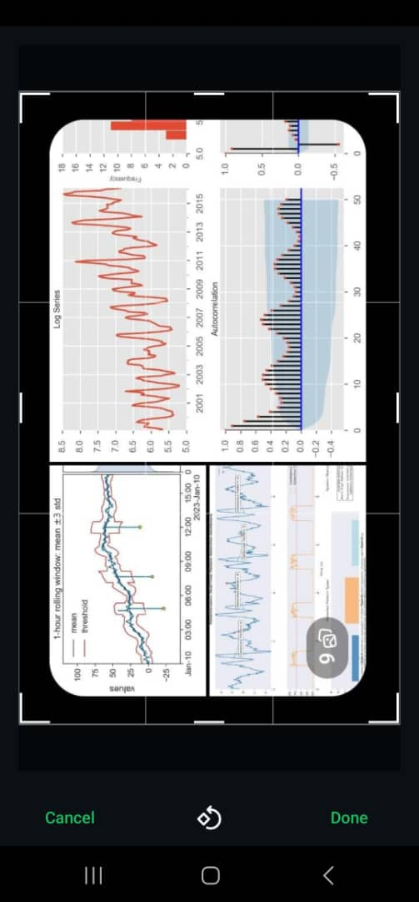
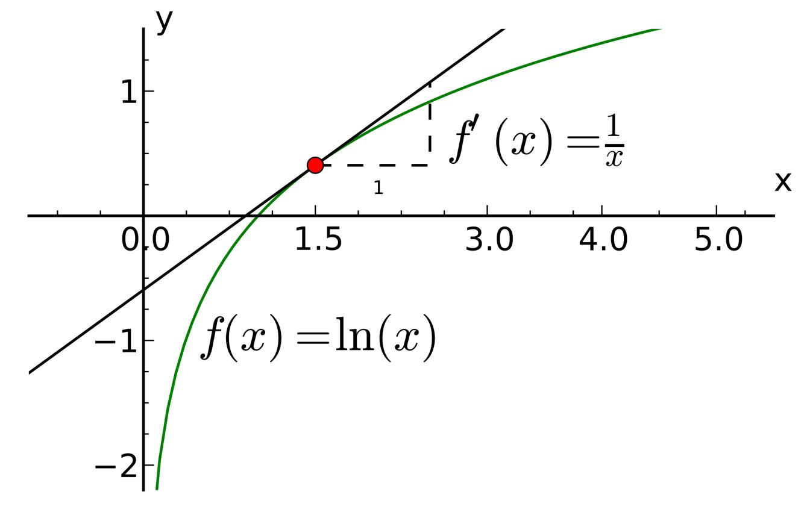

الشكل 1 — توثيق مرحلة Method Transfer (§08). صورة توضيحية، وليست نتيجة عددية.

الشكل 2 — توثيق مرحلة Shape Transfer (§09). صورة توضيحية، وليست نتيجة عددية.

الشكل 2 — توثيق مرحلة Shape Transfer (§09). صورة توضيحية، وليست نتيجة عددية.

الشكل 2 — توثيق مرحلة Shape Transfer (§09). صورة توضيحية، وليست نتيجة عددية.
دالة ZX — التوثيق المجمّد
آخر تحديث مجمّد: 23 نوفمبر 2026 — 23/11/2026 | إغلاق الجولة الخارجية والعودة إلى ZX
تحديث 23 نوفمبر 2026 — v5: §06 مغلق. §01 مغلق. §02 مغلق. Amendment §13.1 + §13.2 مثبّتان. §03 لم يُفتح بعد — التالي. لا تعديل في الأقسام 01-10 المجمّدة. لا إضافة لـ Amendment §11 هنا.
01 — الهوية والحدود
- نعمل على ZX ودوالها ومشتقاتها وتكاملاتها.
- لا نجعل ريمان هدفاً للبحث.
- لا نسمي ZX معادلة التوحيد.
- لا نخلطها بشجرة التوحيد أو المعكوس الذهبي والفضي أو زاوية 22.5.
02 — درجات التنبؤ
درجة 1: تنبؤ مشتق رياضياً.
درجة 2: تنبؤ تحقق عددياً بصورة مستقلة.
درجة 3: تنبؤ ثبت ضمن شروط محددة.
03 — التعريف المعتمد
Zx(0,t) = C(t)
C(t) = 1 − exp(−69.8 t / (100 × 13.799))
Cnow ≈ 0.50242053 | Anow ≈ 0.49757947 | C + A = 1
تعريف الزمن المرجعي — مضاف في مراجعة الإغلاق، من المعادلة نفسها، دون تغيير أي قيمة:
القيمة Cnow ≈ 0.50242053 تتوافق حسابياً مع tref = 13.799، بنفس وحدة t المستخدمة في C(t) وفي المقام 13.799. عند هذا الزمن يصبح الأس 69.8 × 13.799 / (100 × 13.799) = 0.698، و C = 1 − exp(−0.698) ≈ 0.50242053.
أي أن Cnow ليست ثابتاً مستقلاً عن المعادلة، بل هي قيمة C(t) عند tref = 13.799. أي استخدام لقيمة C مختلفة يجب أن يذكر t المقابل له صراحة.
ملاحظة: هذا التوضيح لا يضيف افتراضاً فيزيائياً جديداً، ولا يفسّر طبيعة t خارج ما هو معرّف في المعادلة.
04 — المشتقات والفروق والتكامل — سجل موحّد
الرمز الموحّد في هذه الوثيقة: Dn = الفرق الدقيق. D̂ = الفرق التقريبي الاستقرائي. لا يُستخدم الرمز نفسه للمعنيين.
dZx/dn = 2π + 1/n
d²Zx/dn² = −1/n²
dkZx/dnk = (−1)k+1 (k−1)! / nk (k ≥ 2)
dZx/dt = dC/dt
∫ Zx(n,t) dn = πn² + n·ln(n) − n + C(t)·n + const
نطاق هذه الصيغ: المشتقات والتكامل أعلاه اشتقاقات مباشرة من تعريف §03، وليست نتائج اختبار جديدة. تُذكر هنا لتوحيد السجل فقط. أي نتيجة اختبارية إضافية حول المشتقات العليا أو التكاملات يجب أن تُسجّل في ملحق مستقل بتاريخها وشروطها، لا أن تُفهم ضمناً من هذه الصيغ.
الفروق المتتالية العليا: ΔDn = Dn+1 − Dn = ln(1+1/(n+1)) − ln(1+1/n). لم يُثبت في هذه الوثيقة أن الفروق العليا تتصرف كتصحيحات متناقصة خارج ZX — بل أظهر §08 عكس ذلك في Prime.
05 — الاختبار الأول
من Zx(6) ≈ 39.9932 إلى Zx(7) ≈ 46.4306 — النتيجة المسجلة: نجح، درجة 1.
06 — مقارنة ZX مع Gamma
| n | Zx | Gamma | Delta |
|---|---|---|---|
| 1 | 6.7856 | 1.0000 | 5.7856 |
| 2 | 13.7620 | 1.0000 | 12.7620 |
| 3 | 20.4508 | 2.0000 | 18.4508 |
| 4 | 27.0195 | 6.0000 | 21.0195 |
| 5 | 33.5926 | 24.0000 | 9.5926 |
| 6 | 39.9932 | 120.0000 | -80.0068 |
ملاحظة موثقة: أصغر دلتا موجبة في هذا النطاق عند n=5. لا يُستخدم هذا الجدول لإثبات علاقة عامة بين ZX و Gamma.
07 — سجل الجولة المغلق: الفروق داخل ZX
توضيح إلزامي قبل قراءة النتائج — مضاف في مراجعة الإغلاق:
Dn هو الفرق الدقيق المستخرج من تعريف ZX. D̂(n+1) هو تقدير استقرائي تقريبي، وليس هوية دقيقة للفرق. لا يجوز الخلط بينهما عند قراءة MAE.
Ẑ(n+1) = Zx(n) + D̂(n+1)
الاختبار الداخلي المجمّد 0-199 — الفروق المتتالية على ZX نفسها:
| Model | MAE |
|---|---|
| M₀ | 6.290117 |
| M₁ | 0.000050 |
| M₂ | 0.000000768 |
| M₃ | 0.000000018 (1.84 × 10⁻⁸) — ليست صفراً |
التصحيح المسجل: لا نصنف هذا درجة 2، لأن التحقق من قيم مولدة بالصيغة نفسها ليس تحققاً مستقلاً.
مصدر الخطأ: الخطأ ليس في ZX نفسها، بل في القانون الاستقرائي التقريبي. الخطأ تراكمي وليس عشوائياً.
⚠️ تنبيه فهرسة في المثال الأصلي — محفوظ دون تغيير الأرقام:
المثال المسجل يقول: n=11: الفرق الدقيق 6.363228 مقابل الاستقرائي 6.362621.
بالتحقق من تعريف §03: القيمة 6.363228 = D12 = 2π + ln(13/12). والقيمة 6.362621 = D11 − 1/(11×12)، حيث D11 = 2π + ln(12/11) ≈ 6.370197.
أي أن المثال الأصلي يقارن قيمتين بفهرسين مختلفين. الأرقام محفوظة كما هي لأنها مجمّدة، لكن أي استخدام مستقبلي لهذا المثال يجب أن يوحّد الفهرس أولاً: إما مقارنة D12 مع تقديره، أو D11 مع تقديره، لا خلطهما. هذا التنبيه لا يغيّر جدول MAE في §07، الذي بقي كما هو.
08 — الاختبار الخارجي الأول: Prime / Method Transfer — مجمّد ومنفّذ
الهدف: هل طريقة الفروق المتتالية تحتفظ بفائدتها خارج ZX؟
السلسلة: أول 200 عدد أولي. التدريب: 1-100. الاختبار: 101-200. خط الأساس: متوسط التدريب 241.33.
| Model | MAE | RMSE |
|---|---|---|
| Baseline | 633.210000 | 663.382554 |
| M₀ | 6.820000 | 7.881624 |
| M₁ | 4.680000 | 6.235383 |
| M₂ | 8.540000 | 11.198214 |
| M₃ | 16.200000 | 20.960916 |
الحكم المجمّد: فشل جزئي مفيد — M₁ تحسن 31.38% على M₀. M₂ و M₃ تراجعا. الفروق العليا في Prime لا تتصرف كتصحيحات متناقصة، بل تضخم التذبذب.
القيد التفسيري: النتيجة تتوافق مع كون انتظام ZX ونعومتها عاملاً مهماً في نجاح الاستقراء بالفروق، لكنها لا تثبت أن النعومة هي السبب الوحيد.
09 — الاختبار الخارجي الثاني: ZX Shape Transfer — مجمّد ومنفّذ
السؤال الجديد: هل شكل ZX نفسه يحمل معلومات قابلة للنقل دون استعمال الفروق المتتالية؟
Linear Index: Ŝi = a′i + b′
التقدير: OLS على التدريب فقط (1-100)، ثم تجميد المعاملات قبل الاختبار (101-200). لا مشتقات، لا M₁-M₃، لا تعديل بعد الكشف.
المعاملات المجمّدة:
Shape: a = 0.8761141042 ، b = -40.2887066674
Linear: a′ = 5.5306870687 ، b′ = -37.9696969697
ميل Shape الضمني مقابل i: a×2π = 5.5047872670 — قريب جداً من a′، وهذا يبرر المنافس الخطي.
| Model | MAE | RMSE |
|---|---|---|
| Baseline | 633.210000 | 663.382554 |
| M₀ | 6.820000 | 7.881624 |
| Shape ZX | 81.541920 | 90.445623 |
| Linear Index | 80.141293 | 88.936595 |
معيار النجاح المجمّد: MAE(Shape) < MAE(Baseline) و MAE(Shape) < MAE(Linear). الشرط الأول تحقق، الثاني لم يتحقق (81.54 > 80.14، فرق +1.400627 لصالح Linear).
الحكم المجمّد: لا ميزة خاصة لشكل ZX
تصحيح إشارة — Amendment §13.1: متوسط الخطأ = pred − true = −81.541920 (سالب لأن التنبؤات أقل من الحقيقي تقريبًا دائمًا)، و MAE = 81.541920. الصيغة السابقة «+81.54» كانت تناقض الجملة نفسها.
تحليل الأخطاء بعد الكشف: الخطأ منهجي — متوسط خطأ Shape = −81.541920، و MAE = 81.541920، أي التنبؤات أقل من الحقيقي دائماً تقريباً. MAE تضخم من 47.49 في 101-150 إلى 115.59 في 151-200. هذا يتوافق مع نمو أسرع من خطي يقارب i log i، لكنه تفسير مدعوم بنمط الخطأ، وليس سبباً محسوماً سلفاً.
القيد التفسيري: لا نقول إن ZX اكتشفت قانون الأعداد الأولية. الاستنتاج الوحيد: التحويل الخطي لشكل ZX لم يتفوق على الانحدار الخطي المباشر على الفهرس في هذا النطاق والتقسيم.
10 — الحصيلة النهائية وإغلاق الجولة الخارجية
| السؤال | النتيجة |
|---|---|
| هل الفروق الأولى تحمل فائدة خارج ZX؟ | نعم، جزئياً ضمن Prime |
| هل الفروق العليا تحتفظ بقوتها؟ | لا، تدهورت |
| هل الشكل الخطي لـ ZX يمنح ميزة على خط الفهرس؟ | لم تظهر ميزة |
| هل أثبتنا قدرة ZX على التنبؤ بالأوليات؟ | لا |
| هل ألغت الاختبارات نتائج ZX الداخلية؟ | لا |
| هل نحتاج تعديل ZX بسبب هذه النتائج؟ | لا |
القرار: إغلاق الاختبارات الخارجية. لا اختبار ثالث الآن. العودة إلى ZX نفسها — إلى الدالة ومشتقاتها والفروق الدقيقة — لفهم البنية الرياضية التي جعلت الفروق تعمل بهذه الدقة داخل ZX، دون افتراضات إضافية.
11 — ملحق مراجعة الإغلاق (ليس نتيجة جديدة)
ما تم في هذه المراجعة فقط:
- إضافة وسم <body> وإصلاح بنية القائمة العلوية.
- إعادة تسمية رابط هذه الصفحة إلى Zx Doc — التوثيق المجمّد، وإزالة تكرار Zx Review.
- تمييز الشكلين 1 و 2 بشرحين مختلفين، بدل عنوان مكرر.
- حذف ملاحظة YOUR-DOMAIN القديمة؛ الرابط الأساسي معرّف بالفعل في أعلى الصفحة.
- توحيد الرموز: Dn دقيق، D̂ تقريبي.
- توضيح tref = 13.799 لـ Cnow.
- ضبط صياغة §10 لربطها بالنطاق والبيانات المولّدة من ZX.
- توثيق تنبيه الفهرسة في مثال §07 دون تغيير الأرقام المجمّدة.
ما لم يتم: لا إضافة لـ Amendment §11 هنا. لا نتائج Statistical Transfer هنا. لا ادعاء بأن انجراف فجوات الأوليات تابع لـ ZX. لا معادلات جديدة كنتائج اختبار. سجل §11 — إن احتُفظ به — يكون في أرشيف مستقل، وليس ضمن قلب ZX.
حالة المطابقة مع zx-equations.html: ⏳ لم تُنفذ بعد — Amendment §13.1.
حالة الملف بعد المراجعة: الهوية 🟢 / التعريف 🟢 / المشتقات والفروق 🟢 سجل موحّد / الاختبارات 🟢 مجمّدة / HTML 🟢 مصلحة / الجاهزية للتجميد النهائي 🟢 بشرط مطابقة zx-equations.html بنداً بنداً قبل الختم النهائي.
12 — ZX Differential Structure — §06: التفكيك — FROZEN · APPROVED
الحالة: مغلق علميًا بالصيغة المصحّحة — 23 نوفمبر 2026. لا يُعاد فتحه إلا إذا ظهر خطأ رياضي حقيقي، لا لمجرد رغبة في تحسين صياغته. التصويت: الأغلبية وافقت.
نطاق هذه الدراسة: دراسة داخلية مستقلة عن سجل الاختبارات المجمّد. لا Prime، لا Shape Transfer، لا تعديل لتعريف ZX.
§06.1 — التفكيك
L(n) = 2πn | R(n) = ln(n) | C(t) = 1 − exp(−69.8 t / (100 × 13.799))
مثبّت: التفكيك إلى خطي + لوغاريتمي + ثابت. استقلال المتغيرات: لا يوجد حد مختلط بين n و t. إزالة الخطي والثابت لا تشوّه الباقي.
التجربة التحليلية: R(n) = Zx(n) − 2πn − C ، فنحصل على الهوية R(n) = ln(n).
§06.2 — نمو الباقي
مثبّت: متزايد، مقعّر تمامًا، غير محدود، ومعدل نموه يتناقص.
§06.3 — الفروق المتتالية
Δ²R(n) = ln( (n+2)n / (n+1)² ) < 0 — من رتبة 1/n²
§06.4 — القانون العام — صيغة حدّية فقط
قيد التثبيت: لا نضع علامة = . هذه صيغة الحد الرئيسي فقط، وليست مساواة دقيقة لكل n و k. عند n ثابت و k كبير، يتدهور التقريب.
الحد التالي — Amendment §13.1، مصحّح في §13.2 (خطأ رياضي في الإضافة الأصلية): الحد التالي الصحيح هو (−1)k+2 · k·k! / (2 nk+1)، وليس k!/(2nk+1). ينقص الصيغة الأولى عامل k. الاشتقاق: Δk jk+1 عند 0 = k!·S(k+1,k) = k!·k(k+1)/2، فينتج المعامل k·k!/2. يصبح مهمًا عندما n صغير و k كبير، وهذا يوضح متى يتدهور التقريب الحدّي.
قيد تفسيري: ثبات الإشارات وتناوبها يفسّر قابلية الفروق للاستغلال، لكنه لا يثبت وحده أن كل درجة أعلى ستقلّل خطأ التنبؤ. ذلك يحتاج ربطًا بقاعدة التنبؤ ومقدار الخطأ.
§06.5 — إعادة البناء التلسكوبية — حدود جمع محددة
تنبيه فهرسة مثبّت: إذا امتد الجمع إلى N، فالنتيجة ln(N+1)، لا ln(N).
الصيغة العامة — Amendment §13.1: ∑j=ab−1 ΔR(j) = ln(b) − ln(a) = ln(b/a)، لكل 1 ≤ a < b.
إعادة البناء من الفروق الدقيقة تلسكوبية ودقيقة. إعادة البناء من الفروق التقريبية تتراكم خطؤها منهجيًا.§06.6 — خطأ التقريب — بقانون واحد محدد
εj = 1/j − 1/(2j²) − ln(1+1/j) < 0
| j | εj |
|---|---|
| 5 | −2.321557 × 10⁻³ |
| 11 | −2.345175 × 10⁻⁴ |
| 100 | −3.308532 × 10⁻⁷ |
| 1000 | −3.330834 × 10⁻¹⁰ |
الخطأ التراكمي حتى 99 = −0.2452346. مجموع التقريب حتى 99 = 4.359936 مقابل ln(100) = 4.605170.
توضيح أرشيفي: أرقام «خطأ كل خطوة» الواردة في تقارير سابقة للقانون الاستقرائي القديم −1/(n(n+1)) لا تنتمي إلى هذا التقريب، ولا تُنقل إلى §06. كل قانون يُحسب خطؤه بقانونه هو.
ما يُثبّت في §06: التفكيك، استقلال المتغيرات، إزالة الخطي والثابت، بنية R(n)، قانون الفروق العليا بصيغة حدّية، إعادة البناء التلسكوبية بحدود دقيقة، خطأ التقريب بقانون محدد، الفصل بين المساواة الدقيقة والتقريب.
ما يبقى مفتوحًا: ربط الفروق العليا بخطأ التنبؤ. تحديد متى تكون الدرجة الأعلى مفيدة ومتى تصبح غير مفيدة. التحقق من قوانين التنبؤ القديمة التي استخدمت تقريبًا بدل الفرق الدقيق.
13 — المرحلة B — ZX Differential Structure — OPEN
الحالة: مفتوحة. الترتيب إلزامي: محورًا محورًا، لا قفز.
| المحور | موضوع الدراسة | السؤال | الحالة |
|---|---|---|---|
| §01 | Dn | لماذا يتناقص؟ وما حدّه؟ | مغلق — مثبّت تحليليًا |
| §02 | ΔDn | ما القانون الدقيق للتناقص؟ | مغلق — مثبّت تحليليًا (§15) |
| §03 | التقارب نحو 2π | ما سرعة التقارب وحدودها؟ | لم يُفتح بعد — التالي |
| §04 | الفروق المتعاقبة | هل نستطيع إثبات تناوب الإشارات وقوانينها؟ | لم يُفتح بعد — يفتح بعد §03 |
قواعد المرحلة B: لا نعيد §06. لا نعيد حساب ما أُغلق. لا Prime. لا Shape Transfer. لا تعديل للنسخة المجمّدة. لا ادعاء مسبق بالاكتشاف.
§01 — Dn — FROZEN · APPROVED — لماذا يتناقص؟ وما حدّه؟
الحالة: مغلق. إثبات تحليلي من التعريف وحده، دون جدول عددي، دون محاكاة، دون استقراء عددي.
§01.1 — التعريف الدقيق
هوية دقيقة، ليست تقريبًا. تُلغى الحدود الخطية والثابتة عند الفرق. C(t) ثابت بالنسبة لفرق n.
§01.2 — التناقص الصارم — إثبات تحليلي
باستخدام تزايد اللوغاريتم تمامًا على (0,∞). لا جدول، لا محاكاة.
§01.3 — الحد
لأن 1/n → 0، وبالاستمرارية ln(1+1/n) → ln(1) = 0.
§01.4 — مقدار الانحراف — هوية دقيقة
الاقتراب من الأعلى، ولا يعبر الحد. المسافة معروفة تمامًا، لا تحتاج تقديرًا تجريبيًا.
§01.5 — حدود دقيقة للانحراف
سطر التبسيط — Amendment §13.1: عند x = 1/n: (1/n)/(1+1/n) = (1/n)/((n+1)/n) = 1/(n+1). لذلك يصبح الطرف الأيسر 1/(n+1) مباشرة، دون قفزة.
§01.6 — الرتبة الرئيسية — صيغة حدّية فقط
قيد التثبيت: الصيغة الحدّية ∼ ليست مساواة. الهوية الدقيقة هي اللوغاريتم.
توضيح تقارب — Amendment §13.1: مفكوك ln(1+x) متقارب لكل x ∈ (−1,1]، أي لكل n ≥ 1، لا فقط حدّيًا عند n → ∞. لكن دقته تقل عند صغر n إذا قطعنا المفكوك. القارئ يجب ألا يظن أن المفكوك صالح فقط حدّيًا.
الطبقات الثلاث — لا نخلط بينها:
- الهوية: Dn = 2π + ln(1+1/n).
- السلوك: يتناقص، ويبقى فوق 2π.
- المقدار: المسافة عن 2π محددة بالضبط، وتتناسب حدّيًا مع 1/n.
ليست ثلاثة اكتشافات مستقلة، بل ثلاث نتائج مترابطة من الهوية نفسها.
ما لم يُفعل في §01: لم يُفتح §02. لم يُحلل ΔDn تفصيليًا. لم يُفتح §03. لم يُستخدم جدول عددي لإثبات أي نتيجة. لم يُعدل ZX أو §06.
14 — Amendment §13.1 — Editorial Fixes — إصلاحات تحريرية، لا إعادة فتح
النطاق: هذه التعديلات لا تفتح §06 ولا §13 الأساسي، ولا تغيّر أي نتيجة. هي تصحيح تناقض تحريري + توضيحات صياغية + إصلاح إشارة واحدة.
- §09: إصلاح إشارة متوسط خطأ Shape من +81.54 إلى −81.541920.
- §13: إصلاح تناقض الجدول/النص — §02–§04 «لم تُفتح بعد»، لا «مغلقة».
- §01.5: إضافة سطر التبسيط (1/n)/(1+1/n) = 1/(n+1).
- §01.6: توضيح أن مفكوك ln(1+x) متقارب لكل n ≥ 1.
- §11: حالة المطابقة مع zx-equations.html: لم تُنفذ بعد.
- §12: إضافة الحد التالي (−1)k+2 k!/(2nk+1) والصيغة العامة للتلسكوب.
- §02: تصحيح اتجاه سلسلة ln(1−x) قبل التثبيت (انظر §02.3 أدناه).
15 — المرحلة B — §02: ΔDn — FROZEN · APPROVED
الحالة: مغلق. إثبات تحليلي من التعريف وحده، دون جدول عددي، دون محاكاة.
§02.1 — الهوية الدقيقة
اشتقاق: ln(1+1/(n+1)) − ln(1+1/n) = ln( (n+2)/(n+1) · n/(n+1) ) = ln( n(n+2)/(n+1)² ). وبما أن n(n+2) = (n+1)² − 1، فالناتج ln(1 − 1/(n+1)²).
§02.2 — الإشارة
اللوغاريتم سالب تحت 1. هذا إثبات تناقص Dn من الجهة الثانية، مستقل عن إثبات §01.
§02.3 — حدود دقيقة — مصحّحة قبل التثبيت
x = 1/(n+1)² ⇒ −1/(n(n+2)) < ΔDn < −1/(n+1)² < 0
تضييق الحد الأعلى — Amendment §13.2 (تحسين دون تغيير النتيجة): من ln(1−x) < −x نحصل على ΔDn < −1/(n+1)²، وهو أقوى من ΔDn < 0. الحدود في v4 كانت صحيحة، لكنها لم تكن الأضيق.
الاشتقاق: x/(1−x) = [1/(n+1)²] / [n(n+2)/(n+1)²] = 1/(n(n+2)). لذلك الحد الأدنى هو −1/(n(n+2))، لا −1/(n+1)².
تصحيح اتجاه السلسلة: مفكوك ln(1−x) = −x − x²/2 − x³/3 − ⋯، أي أن المجموع الجزئي −x − x²/2 أكبر من ln(1−x) (أقل سلبية)، لا أصغر منه. لذلك لا نثبّت الصيغة «−x − x²/2 − ⋯ < ΔDn» كما وردت في المسودة، بل نثبّت الحدود الصحيحة أعلاه.
§02.4 — الرتبة الحدية فقط
قيد التثبيت: ∼ ليست مساواة. الهوية الدقيقة هي اللوغاريتم.
§02.5 — ما يثبته §02 وما لا يثبته
يثبت: التناقص قانوني، بمقدار معروف تمامًا، ويتباطأ كـ 1/n².
لا يثبت: أن درجة أعلى في الاستقراء ستحسّن التنبؤ دائمًا. ذلك يحتاج ربطًا بقاعدة التنبؤ، وهو ما بقي مفتوحًا من §06.
الطبقات الثلاث في §02:
- الهوية: ΔDn = ln(1 − 1/(n+1)²)
- السلوك: سالب دائمًا، ويقترب من صفر من الأسفل
- المقدار: المسافة عن صفر محددة، وتتناسب حدّيًا مع 1/n²
ما لم يُفعل في §02: لم يُفتح §03. لم يُستخدم جدول عددي للإثبات. لم يُعدل ZX أو §06 أو §01.
16 — Amendment §13.2 — تصحيحات v4 — لا إعادة فتح
النطاق: تصحيح خطأ رياضي واحد في إضافة سابقة + مزامنة جدول الحالة + إصلاح بنية HTML + تحديث سجل الإصدار. لا تفتح §06 ولا §01 ولا §02، ولا تغيّر أي نتيجة مغلقة.
- §06.4 — خطأ رياضي حقيقي، تم إصلاحه: الحد التالي الصحيح هو (−1)k+2 · k·k! / (2nk+1)، وليس k!/(2nk+1). كان ينقصه عامل k. الاشتقاق عبر أعداد ستيرلينغ: S(k+1,k) = k(k+1)/2.
- §13 — مزامنة الحالة: §01 مغلق، §02 مغلق (§15)، §03 لم يُفتح بعد — التالي، §04 لم يُفتح بعد — ينتظر §03.
- §02.3 — تضييق الحد الأعلى: ΔDn < −1/(n+1)²، أقوى من < 0. تحسين دون تغيير النتيجة.
- §06.5 — إصلاح بنية HTML: إزالة عنصر p المخفي والنص اليتيم وإغلاق الفقرة المطابق.
- سجل الإصدار: تحديث السطر الرئيسي ليعكس الإغلاق الفعلي لـ §01 و §02.
حصيلة v5: §06 و §01 و §02 مغلقة. §03 لم يُفتح بعد. v4 لم تكن خالية من الأخطاء؛ v5 تصحّح النقاط الموثقة أعلاه.
تحديث v5 — 23 نوفمبر 2026. §06 مغلق. §01 مغلق. §02 مغلق. §03 لم يُفتح بعد. لا نفتح §03 في هذه المراجعة.
تحديث v4 — 23 نوفمبر 2026. §06 مغلق. §01 مغلق. §02 مغلق. Amendment §13.1 مثبّت. §03 لم يُفتح بعد.
تحديث v3 — 23 نوفمبر 2026. §06 مغلق. §01 مغلق تحليليًا. §02 لم يُفتح بعد.
تم التجميد والتنفيذ في 23 نوفمبر 2026. مراجعة الإغلاق: توضيحات بنيوية وصياغية فقط. لا تعديل بعد الكشف.